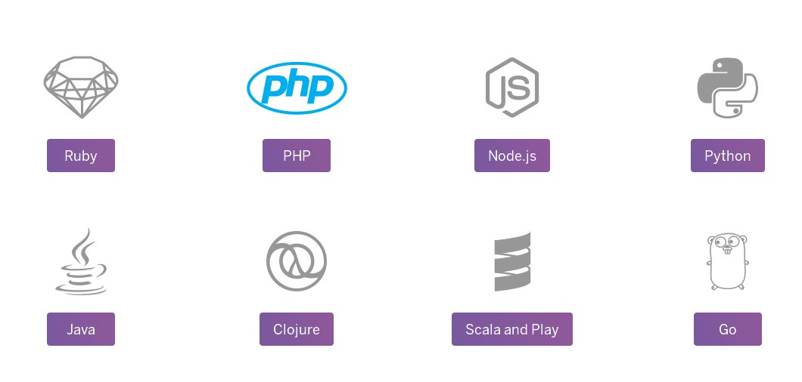

Introduction to  By Michael Mottola
By Michael Mottola
What is Heroku?
A Cloud Platform as a Service (PaaS) Provider
- Company based out of San Francisco
- One of the first cloud PaaS providers, launched in 2007
- Originally support only Ruby
- Acquired by Salesforce.com in December 2010
- Yukihiro "Matz" Matsumoto, joined the company as Chief Architect
Heroku Supports

Heroku Database Supports
- PostgreSQL
- Cloudant
- CouchDB
- MongoDB
- Redis
Heroku gives you choice of running on a shared or dedicated database package.
Heroku Toolbelt
Heroku Command Line Interface (CLI) for managing and scaling applications and add-ons.
https://toolbelt.heroku.com/
$ heroku login Enter your Heroku credentials. Email: adam@example.com Password (typing will be hidden): Authentication successful.
About Big Data
- It's about generating value from very large data sets
- The amount of data is growing exponentially for many reasons:
- retailers building databases of customer activity
- logistics, financial, government, & health are capturing more data
- social media
Provide opportunities to find insights into new and emerging types of data.IBM
Holds the promise of giving enterprises deeper insights into your customers, partners, and business.Oracle
Learn More
- Heroku Dev Centerhttps://devcenter.heroku.com/
Thank You
/